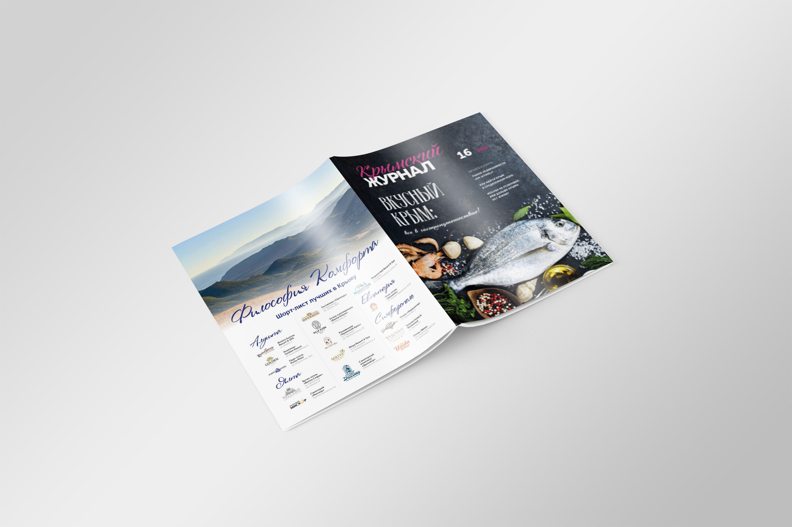
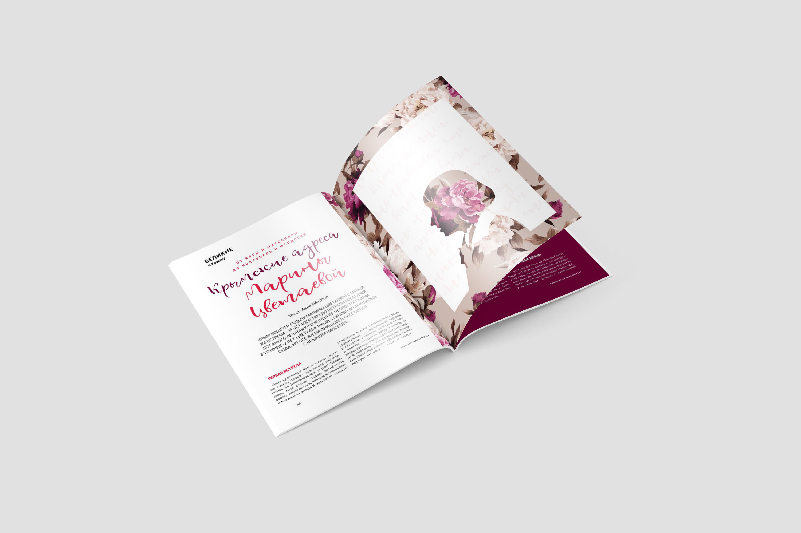
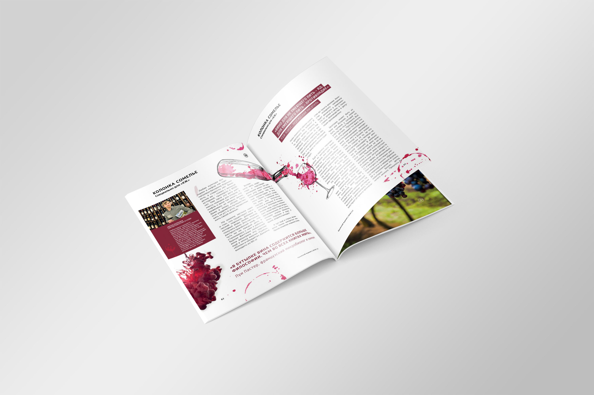
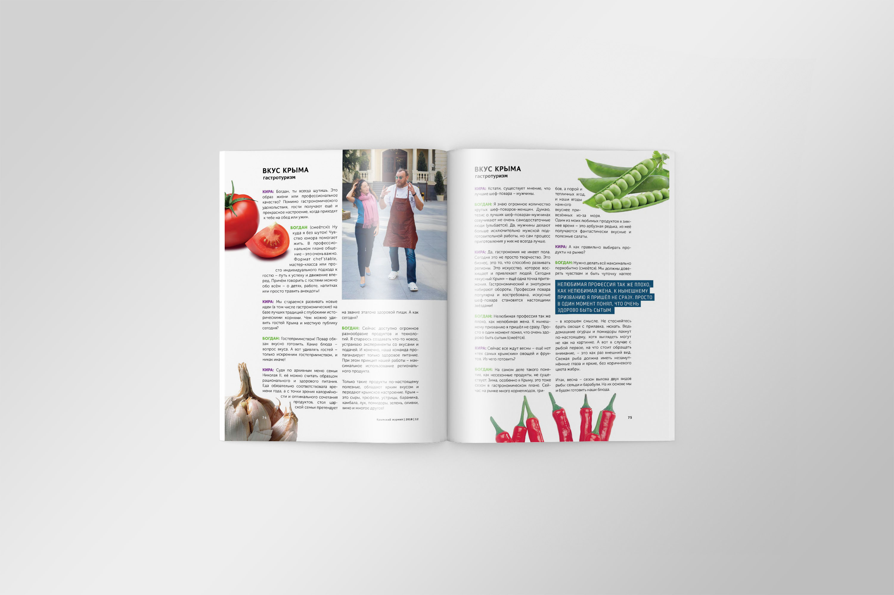
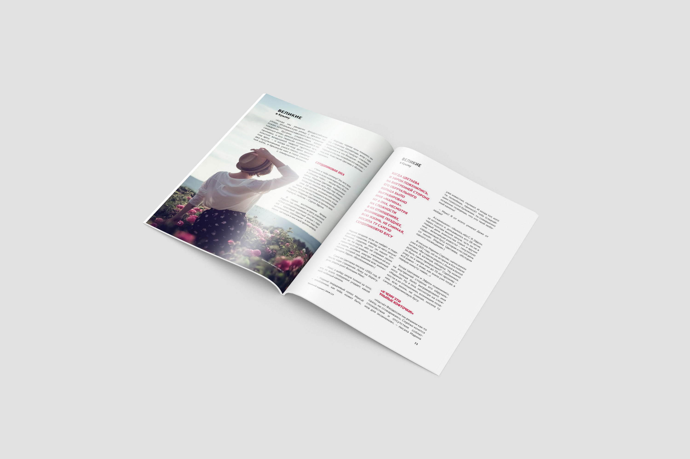
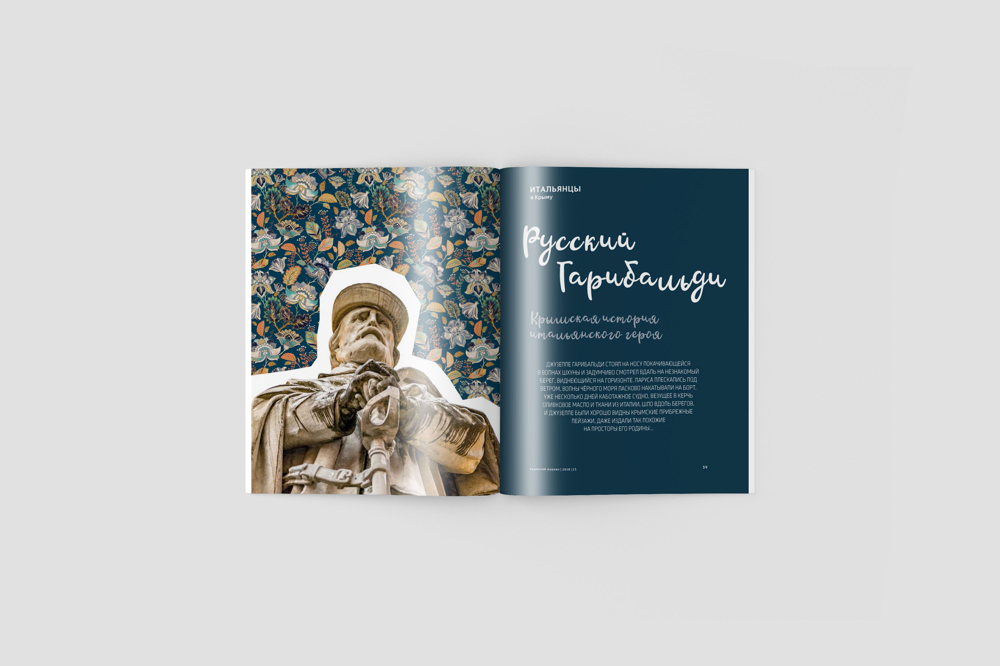
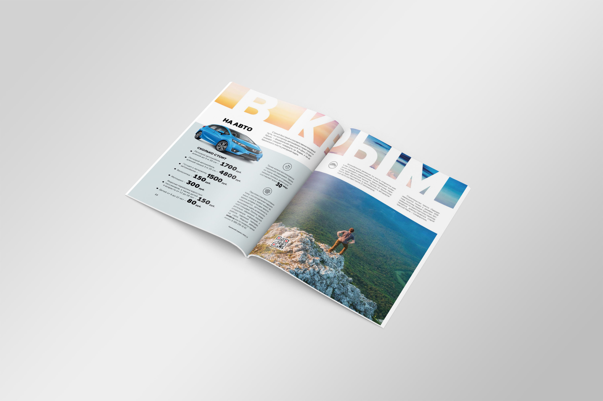

Editorial layout and production for a magazine covering tourism, history, people, food, and business. Grid-based spreads, clean typography, and consistent visual rhythm across articles — prepared as print-ready pages.
Year
2018
Services
Layout design · Preprint
THANK YOU FOR VISITING